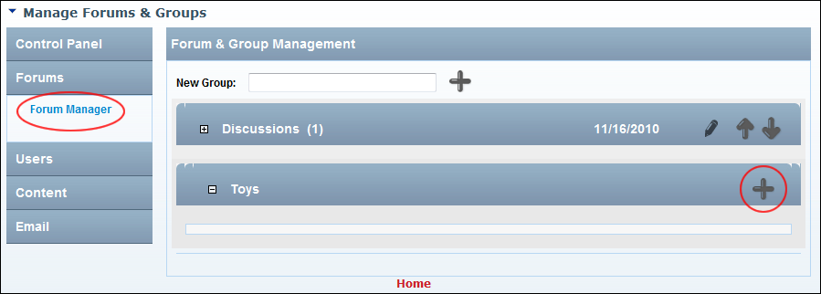
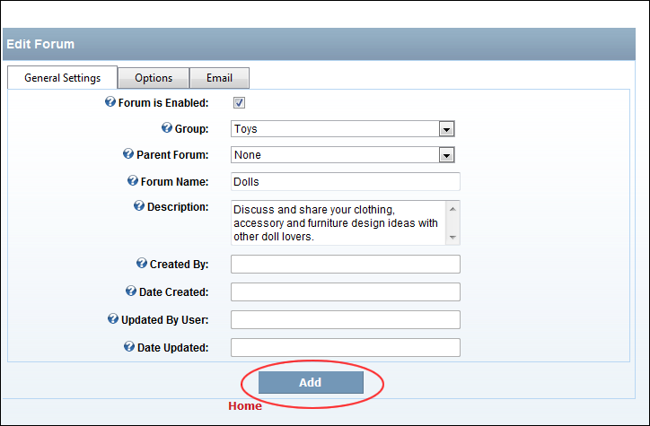
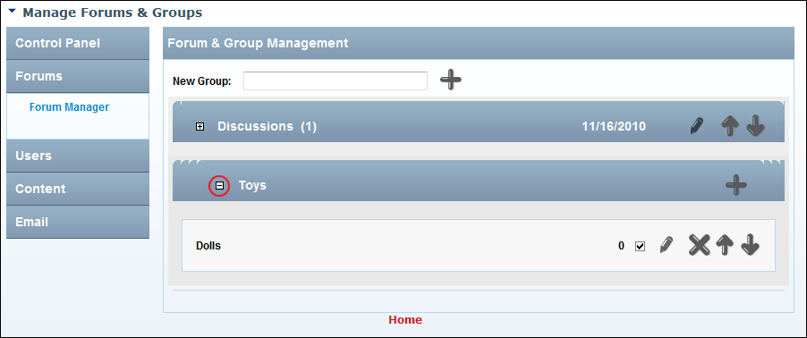

Adding a Forum
How to add a new forum to the Forum module.
- Go to the Forum Administration page. See "Navigating to the Forum Admin Page"
- In the left-hand panel, select Forums > Forum Manager. This displays the Forum and Group Management section.
- Maximize
 the Forum Group to which the forum will be added.
the Forum Group to which the forum will be added.

- Click the Add Forum
 button located in the title bar of the selected group. This displays the General Settings tab of the Edit Forum window.
button located in the title bar of the selected group. This displays the General Settings tab of the Edit Forum window.
- At Forum is Enabled, if the forum to be displayed and allowing posting - OR - if the forum is disabled.
- Optional. At Group, re-select the Forum Group if required. The group selected at step 3 will be pre-selected.
- Optional. At Parent Forum, select a parent for this forum.
- In the Forum Name text box, enter a name for the new forum.
- Optional. In the Description text box, enter a short description of the purpose of this forum and the intended content.
- Optional. See "Setting Forum Permissions", See "Setting Forum Options" or See "Setting Forum Email"

- Click the Add link. The new forum is now added to the selected group.
- Optional. Maximize
the Forum Group to view the new forum.

The Newly Added Forum
Note: The Created By, Date Created, Updated By User and Date Updated fields on the Edit Forum page are automatically populated when the forum is added.

Details of the Newly Added Forum on the Edit Forum page